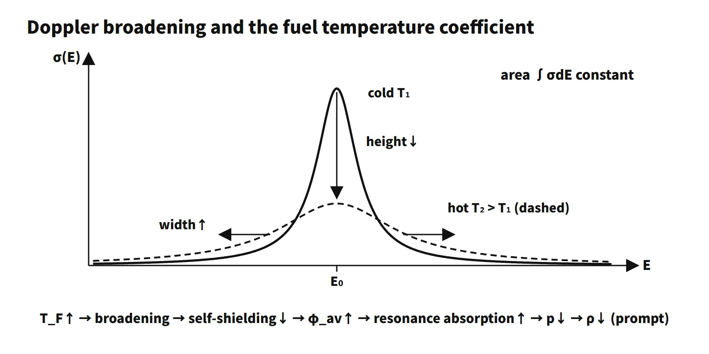

Reactor Physics & Kinetics · C-RX-010
Fuel Temperature Coefficient (Doppler Coefficient, FTC) — Prompt Negative Feedback from Resonance Broadening
Thermal motion lowers and widens the resonance at constant area, self-shielding weakens, and resonance absorption rises: the prompt negative feedback behind GDC 11.
The fuel temperature coefficient (FTC, αF) is the change in reactivity per degree of change in the (effective) fuel temperature with the moderator temperature held fixed, αF = ∂ρ/∂TF, expressed in pcm/K (= pcm/°C) or pcm/°F (1 pcm/°F = 1.8 pcm/°C). Because it is caused by the Doppler broadening of the resonances of absorbers such as U-238, it is also called the Doppler coefficient. Since it follows power changes without delay, Lamarsh calls it the prompt temperature coefficient.
In one sentence: "the coefficient of prompt negative feedback whereby a rise in fuel temperature increases U-238 resonance absorption and lowers reactivity; the first line of the reactor's inherent safety."
Principle and mechanism
Thermal motion broadens the resonances
The resonance cross section σ(E) is drawn with the Breit–Wigner formula assuming the target nucleus is at rest. Real nuclei are in thermal motion, so the relative energy between neutron and nucleus is spread out, and averaging over that motion makes the resonance lower and wider. The measure of the spread is the Doppler width Δ = √(4E₀kT/A), and the shape is calculated with the Voigt function ψ(ξ, x) (ξ = Γ/Δ). The key fact is that the area ∫σ dE stays almost constant regardless of temperature.
Same area, more absorption
![Calculated capture cross section of the U-238 6.67 eV resonance at 300, 900 and 1,500 K with peaks of 7,160, 4,554 and 3,639 b (22,556 b at 0 K), a full width at half maximum of 169 meV at 900 K and an area that differs by less than 0.01 percent; a second graph shows the self-shielded effective resonance integral rising with fuel temperature to 1.198 times for a dilution cross section of 100 b and 1.124 times for 50 b while infinite dilution stays constant; cards give the absorption-rate equation and the U.S. EPR Doppler temperature coefficient of −1.8 to −1.3 pcm per degree F](../../assets/images/concepts/c-rx-010-fuel-temperature-coefficient/fig1-doppler-broadening-self-shielding.webp)
A direct calculation for the U-238 6.67 eV resonance (Γ = 24.5 meV) shows the capture peak falling from 22,556 b at 0 K to 7,160 b at 300 K and 4,554 b at 900 K, while the full width at half maximum grows from 24 meV to 169 meV. The area integrated including the tails differs by less than 0.01 % between temperatures.
So why does absorption increase? Inside a fuel rod, the neutron flux at resonance energies is depressed by the strong absorption (energy self-shielding). This is the key to the sign of the coefficient. The absorption rate is:
- Fa = ∫φ(E)Σa(E)dE = φav·∫Σa(E)dE
- ∫Σa dE is the area of the resonance, so it is almost independent of temperature.
- φav is the average flux within the resonance weighted by Σa. As the peak gets lower, the flux depression becomes shallower and φav increases.
- Fa therefore increases, the resonance escape probability p decreases, and αF < 0.
In the infinite-dilution limit with no self-shielding, φav does not change and the Doppler effect disappears. With the single-resonance NR approximation I = ∫σγσd/(σt + σd) dE/E, the effective resonance integral rises by 5.2 % from 300 to 900 K for a dilution cross section σd = 50 b (8.6 % for 100 b).
Textbook approximation and temperature dependence
Lamarsh writes the resonance integral as I(T) = I(300 K)[1 + βI(√T − √300)] and derives:
- αF = −[βI/(2√T)]·ln[1/p(300 K)]
- UO₂: βI = 61×10⁻⁴ + 0.94×10⁻²/(a·ρf) (a radius in cm, ρf fuel density in g/cm³)
For a PWR pellet (a = 0.41 cm, ρf = 10.4 g/cm³, p = 0.87) this gives about −1.9 pcm/K at 900 K. The magnitude is proportional to 1/√T and becomes smaller at higher temperature (the broadening saturates), but the sign is always negative.
What it means in a plant
Typical magnitude and burnup dependence
| Item | Value (example) | Source |
|---|---|---|
| Doppler temperature coefficient | −1.8 to −1.3 pcm/°F | U.S. EPR FSAR Table 4.3-2 |
| Doppler power coefficient | −8.8 to −7.9 pcm/%power (lower limit) | same table |
| Westinghouse training material | figure spanning −1.9 to −1.2 pcm/°F | NRC Westinghouse Technology Manual 2.1 |
For a large PWR, remember a range of roughly −1 to −2 pcm/°F (−2 to −4 pcm/K). As burnup proceeds, Pu-240, with its giant resonance at 1.06 eV, builds up and the temperature coefficient becomes more negative. The Doppler power coefficient (pcm/%power), on the other hand, can become less negative: pellet swelling and cladding creep close the gap, so the fuel temperature rise at the same power is smaller (Westinghouse material: 0→100 % rise about 1,000 °F at BOL and about 800 °F at EOL), and this effect is large. Distinguish the two by their units. MOX cores contain more Pu-240 and are generally more negative.
Prompt feedback and reactivity accidents
Heat is generated inside the fuel, so the fuel temperature rises together with power. The FTC is therefore the feedback that first turns over the power peak in a reactivity accident such as a rod ejection. Moderator feedback acts only several seconds later, once heat has been transferred to the coolant. In transients beyond prompt criticality, the FTC is the main feedback that limits the pulse width and energy.
Reactivity change for a power increase
With uniform heat generation in the pellet, T(r) = Ts + q‴(a² − r²)/(4kf) and q′ = πa²q‴.
- Center minus surface: Tc − Ts = q′/(4πkf)
- Volume average minus surface: T̄_F − Ts = q′/(8πkf)
- 100 → 110 %: Δq′ = 0.1q′ → ΔT̄_F = 0.1q′/(8πkf)
- Δρ = αT·ΔT̄_F = αT·0.1q′/(8πkf)
For example, with q′ = 18 kW/m, kf = 3 W/m·K and αT = −2.5 pcm/K, ΔT̄_F ≈ 24 K and Δρ ≈ −60 pcm. This counts only conduction inside the pellet; the temperature rises across the gap and cladding are added separately. Using the centerline temperature (q′/4πkf) instead of the volume average (q′/8πkf) would double ΔT, so state which one is used.
Link to the power coefficient and power defect
ITC = MTC + FTC, and power coefficient = MTC·dTM/dP + FTC·dTF/dP. For example, ITC = −12 pcm/K and MTC = −10 pcm/K give FTC = −12 − (−10) = −2 pcm/K. The Doppler share of the power defect from 0 to 100 % power is a few hundred to about 1,000 pcm (Westinghouse example: about −1,025 pcm at 100 % power at EOL), and it returns as positive reactivity when power is reduced or the reactor is shut down.
Regulatory and design criteria
The criteria below are examples from the United States (US NRC) and the IAEA.
- 10 CFR 50 Appendix A, GDC 11 (reactor inherent protection): in the power-operating range, the net effect of the prompt inherent nuclear feedback must tend to compensate for a rapid increase in reactivity.
- NUREG-0800 SRP 4.3: reviews the calculation of reactivity coefficients and their uncertainties. Safety analyses use the least negative value for heat-up and power-increase events and the most negative value for return to criticality in cooldown events.
- Reactivity-accident criteria: RG 1.236 (2020) sets criteria on fuel enthalpy rise, whose size the Doppler feedback limits.
- Operation: the FTC is not measured directly; a calculated value is used. In the startup physics tests the ITC is measured and the MTC is separated as MTC = ITC − FTC. Unlike the MTC, the FTC has no LCO of its own.
- IAEA: SSR-2/1 (Rev. 1, 2016) core design requirements; SSG-52 (2019).
Easily confused pairs
| FTC (Doppler) | MTC | Resonance absorption | |
|---|---|---|---|
| Variable | Fuel temperature | Moderator temperature (density) | — |
| Mechanism | Resonance broadening + self-shielding | Change in moderation and absorption | Capture at resonance energies |
| Response | Prompt | Delayed by several seconds | — |
| Sign | Always negative | Can be positive at BOC | Probability 1 − p |
| Magnitude (PWR example) | −1 to −2 pcm/°F | +a few to −45 pcm/°F | — |
The Doppler "temperature coefficient" (pcm/°F) and the Doppler "power coefficient" (pcm/%power) are another easily confused pair. The latter includes the factor dTF/dP, so it depends on changes in gap conductance.
Key points at a glance
- Definition: fuel temperature↑ → thermal motion of nuclei → spread in neutron–nucleus relative energy → resonance peak↓, width↑, area ∫σdE constant.
- Measures: Doppler width Δ = √(4E₀kT/A); shape ψ(ξ, x), ξ = Γ/Δ.
- Weaker self-shielding: the resonance flux depression in the fuel becomes shallower → φav↑.
- More absorption: Fa = φav∫Σa dE ↑ → p↓ → reactivity↓.
- FTC: αF = ∂ρ/∂TF < 0, about −1 to −2 pcm/°F in a PWR.
- Promptness: heat is generated in the fuel → no delay → ends the first power peak in an RIA.
- Temperature dependence: ∝ 1/√T, smaller at higher temperature.
- Burnup dependence: Pu-240 build-up → temperature coefficient more negative (the power coefficient can become less negative as the gap closes).
- Basis: inherent protection requirement (for example, US NRC GDC 11).
